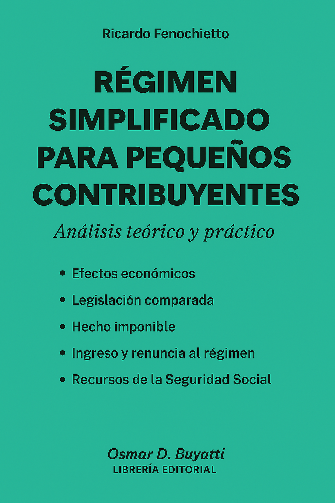

Economist • Author • Fiscal Policy Expert
Specialist in public sector economics, tax policy and VAT systems with over 25 years of experience working with the IMF and international organizations.
Ricardo Fenochietto is an International Consultant on Taxes and Fiscal Issues and author with a distinguished career in public finance.
He has worked extensively with the International Monetary Fund (IMF) and other international organizations, contributing to fiscal policy reforms around the world.
With over 25 years of experience in both academic and policy roles, Fenochietto is known for combining technical rigor with practical insights—especially in the areas of tax administration, public sector economics, and fiscal decentralization.
He was Senior Economist of the Tax Policy Division of the Fiscal Affairs Department in the International Monetary Fund until September 2023. He has advised more than 40 countries (in 111 missions) in Latin America, Eastern Europe, Africa, Middle East, East and Southeast Asia on capacity development in fiscal policy and tax administration issues including income and international taxation, VAT, excises, natural and environmental resources taxation, pension systems, and public financial management. He was also a back-stopper and reviewer on these issues.
Before joining the Fund, he was a professor of Public Finance at Universidad Di Tella (Argentina) and a private consultant of Multinational Organizations. He has published extensively on taxation and public finance issues; his recent work focused on tax capacity, tax effort, and financial sector taxation. He is also a peer reviewer for several journals of Public Finance.
Mr. Fenochietto is a graduate of the University of Buenos Aires, where he earned his master's degree in Public Finance with specialization in taxation in May 1995.
Advise country authorities on options for Revenue Mobilization and improvement in the Fiscal Framework (including the expenditure side).
Research and published works in collaboration with international institutions.
Analyzes how tax systems can rebuild inclusivity and economic resilience post-pandemic—assessing progressive taxes, revenue mobilization, and policy trade-offs.
View publicationEvaluates the distributional and compliance effects of VAT policies—showing that invoice-based incentives may harm equity, while targeted tax credits can mitigate regressivity.
View publicationCompares tax systems across three countries, evaluating their balance between efficiency (revenue raising) and equity (income distribution), with policy recommendations.
Proposes a cross-agency identification and data-sharing system aimed at reducing informality, improving tax compliance, and enhancing social protection.
Details how shared VAT mechanisms can enhance fiscal federalism.
Ideas RePEcApplies stochastic frontier analysis to assess tax capacity vs. actual effort across 96 countries, identifying socioeconomic drivers of tax performance.
View articleDemonstrates how integrated social registries in Argentina improve targeting of social programs.
ResearchGateAnalyzes Libya's fiscal vulnerabilities due to oil dependence, proposing strategic savings and stabilization policies for long-term growth prospects.
ResearchGateOffers a critical overview of approaches to quantify tax evasion.
Google ScholarReviews methodologies for estimating tax evasion and informal economy activity, offering empirical insights relevant for policy formulation.
UBA Digital LibraryEarly exploration of shared VAT frameworks and their implications for fiscal federalism.
Investigates how a temporary tax on bank transactions led to measurable decreases in deposit volumes, highlighting behavioral and fiscal responses.
ResearchGateChronicles Peru's economic transformation through fiscal reforms and policy implementation.
Three fundamental works in the field of fiscal economics, tax administration and special regimes.
Economic, technical and legal analysis
Buenos Aires: La Ley, 2001
A comprehensive 923-page treatment of the value-added tax (VAT), covering economic concepts, technical frameworks, and legal implications. Includes in-depth analysis of its structure, incidence, and fiscal effects in Latin America.
Comprehensive analysis of public finance and its effects
Buenos Aires: La Ley, 2006
A wide-ranging guide to public sector economics, focusing on the fiscal impact of government policy, revenue collection, and spending on fiscal stability and economic outcomes.

Theoretical and practical analysis
Osmar D. Buyatti, Librería Editorial, Argentina, 1999
A practical and theoretical look at Argentina's simplified tax regime (Monotributo) for small taxpayers. Explores its economic effects, comparative legislation, taxable events, entry and exit conditions, and implications for social security funding.
For academic inquiries, collaborations, conferences, or international consulting services.
Specialist in taxes and fiscal issues with experience advising 40+ countries worldwide
Expert in fiscal economics, tax administration, and public sector economics
Three books and numerous academic publications in public finance and taxation
Senior Economist at IMF Tax Policy Division (2005-2023) with 111 missions completed
Available for international consulting on: